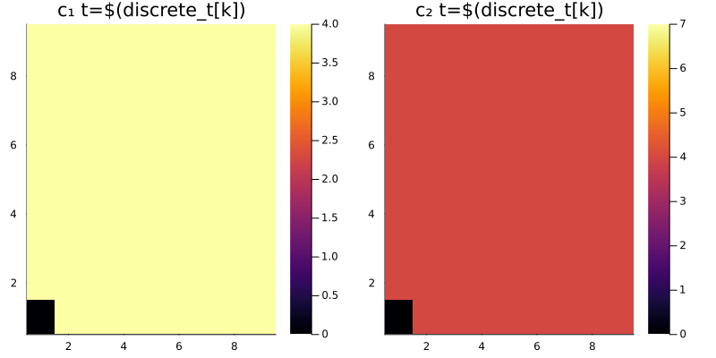

using EarthSciMLBase
using ModelingToolkit, Catalyst, DomainSets, MethodOfLines, DifferentialEquations
using Plots
# Create our independent variable `t` and our partially-independent variables `x` and `y`.
@parameters t x y
# Create our ODE systems of equations as subtypes of `EarthSciMLODESystem`.
# Creating our system in this way allows us to convert it to a PDE system
# using just the `+` operator as shown below.
# Our first example system is a simple reaction system.
struct ExampleSys1 <: EarthSciMLODESystem
sys
function ExampleSys1(t; name)
@species c₁(t)=5.0 c₂(t)=5.0
new(convert(ODESystem, ReactionSystem(
[Reaction(2.0, [c₁], [c₂])],
t; name=name,
), combinatoric_ratelaws=false))
end
end
# Our second example system is a simple ODE system,
# with the same two variables.
struct ExampleSys2 <: EarthSciMLODESystem
sys
function ExampleSys2(t; name)
@variables c₁(t)=5.0 c₂(t)=5.0
@parameters p₁=1.0 p₂=0.5
D = Differential(t)
new(ODESystem(
[D(c₁) ~ -p₁, D(c₂) ~ p₂],
t; name=name,
))
end
end
# Specify what should happen when we couple the two systems together.
# In this case, we want the the derivative of the composed system to
# be equal to the sum of the derivatives of the two systems.
# We can do that using the `operator_compose` function
# from this package.
function Base.:(+)(sys1::ExampleSys1, sys2::ExampleSys2)
operator_compose(sys1, sys2)
end
# Once we specify all of the above, it is simple to create our
# two individual systems and then couple them together.
@named sys1 = ExampleSys1(t)
@named sys2 = ExampleSys2(t)
sys = sys1 + sys2
# At this point we have an ODE system that is composed of two other ODE systems.
# We can inspect its equations and observed variables using the `equations` and `observed` functions.
simplified_sys = structural_simplify(get_mtk(sys))
equations(simplified_sys)
observed(simplified_sys)
# We can also run simulations using this system:
odeprob = ODEProblem(simplified_sys, [], (0.0,10.0), [])
odesol = solve(odeprob)
plot(odesol)
# Once we've confirmed that our model works in a 0D "box model" setting,
# we can expand it to 1, 2, or 3 dimensions using by adding in initial
# and boundary conditions.
# We will also add in advection using constant-velocity wind fields
# add the same time.
x_min = y_min = t_min = 0.0
x_max = y_max = t_max = 1.0
domain = DomainInfo(
constIC(4.0, t ∈ Interval(t_min, t_max)),
periodicBC(x ∈ Interval(x_min, x_max)),
zerogradBC(y ∈ Interval(y_min, y_max)),
)
sys_pde = sys + domain + ConstantWind(t, 1.0, 1.0) + Advection()
# Now we can inspect this new system that we've created:
sys_pde_mtk = get_mtk(sys_pde)
equations(sys_pde_mtk)
sys_pde_mtk.dvs
# Finally, we can run a simulation using this system:
discretization = MOLFiniteDifference([x=>10, y=>10], t, approx_order=2)
@time pdeprob = discretize(sys_pde_mtk, discretization)
@time pdesol = solve(pdeprob, Tsit5(), saveat=0.1)
# Plot the solution.
discrete_x, discrete_y, discrete_t = pdesol[x], pdesol[y], pdesol[t]
@variables sys1₊c₁(..) sys1₊c₂(..)
solc1, solc2 = pdesol[sys1₊c₁(t, x, y)], pdesol[sys1₊c₂(t, x, y)]
anim = @animate for k in 1:length(discrete_t)
p1 = heatmap(solc1[k, 1:end-1, 1:end-1], title="c₁ t=\$(discrete_t[k])", clim=(0,4.0), lab=:none)
p2 = heatmap(solc2[k, 1:end-1, 1:end-1], title="c₂ t=\$(discrete_t[k])", clim=(0,7.0), lab=:none)
plot(p1, p2, layout=(1,2), size=(800,400))
end
gif(anim, fps = 8)
